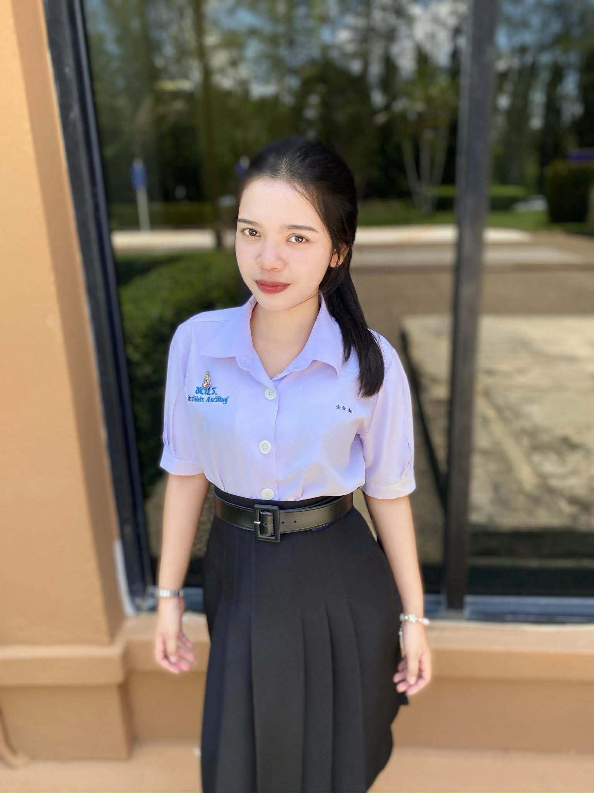

ศิรภัสสร สังขวิสิษฐิ์ เลขที่12 m.6/1

ณัฐณิชา สืบ เลขที่6 m.6/1

ศิรภัสสร สังขวิสิษฐิ์ เลขที่12 m.6/1
ณัฐณิชา สืบ เลขที่6 m.6/1
แฟ้มสะสมผลงานเพื่อเข้าศึกษาต่อคณะพยาบาลศาสตร์
FACULTY OF NURSING

ชื่อ-นามสกุล : นางสาวณัฐณิชา สืบ
ชื่อเล่น : [เเก้ม]
สถานศึกษา : โรงเรียนทุ่งใหญ่เฉลิมราชอนุสรณ์ รัชมังคลาภิเษก
ระดับการศึกษา : มัธยมศึกษาปีที่ 6/1
แผนการเรียน : วิทยาศาสตร์
ความสนใจ : วิชาชีพพยาบาลและการดูแลสุขภาพ
โรงเรียนทุ่งใหญ่เฉลิมราชอนุสรณ์ รัชมังคลาภิเษก
ระดับชั้น : มัธยมศึกษาปีที่ 6
เกรดเฉลี่ย : [3.79]
แผนการเรียน : วิทยาศาสตร์-คณิตศาสตร์
โรงเรียนทุ่งใหญ่เฉลิมราชอนุสรณ์ รัชมังคลาภิเษก
เกรดเฉลี่ย : [3.98]
ได้เรียนรู้การทำงานของบุคลากรทางการแพทย์ สังเกตการดูแลผู้ป่วยและการปฐมพยาบาล ทำให้เข้าใจถึงบทบาทหน้าที่ของพยาบาล และความสำคัญของการดูแลผู้ป่วยทั้งร่างกายและจิตใจ
ได้เรียนรู้การเอาใจใส่และการสื่อสารกับผู้ป่วย เข้าใจว่าการดูแลผู้ป่วยต้องอาศัยความอดทน ความเมตตา และการคำนึงถึงความรู้สึกของผู้อื่น
ได้เรียนรู้การเสียสละ การช่วยเหลือผู้อื่น และการทำประโยชน์เพื่อส่วนรวม ซึ่งเป็นพื้นฐานสำคัญของการประกอบวิชาชีพพยาบาล
ได้พัฒนาทักษะการเรียนรู้ การคิดวิเคราะห์ การแก้ไขปัญหา และการทำงานอย่างเป็นระบบ เพื่อนำความรู้ไปประยุกต์ใช้ในการศึกษาต่อ
ดิฉันมีความมุ่งมั่นที่จะศึกษาต่อในคณะพยาบาลศาสตร์ เพื่อพัฒนาความรู้ ความสามารถ และทักษะในการดูแลผู้ป่วย มุ่งหวังที่จะเป็นพยาบาลที่มีความรู้คู่คุณธรรม มีความรับผิดชอบ เสียสละ และพร้อมช่วยเหลือเพื่อนมนุษย์ รวมถึงนำความรู้ที่ได้รับไปใช้ให้เกิดประโยชน์ต่อสังคม
"ขอให้ถือประโยชน์ส่วนตนเป็นที่สอง ประโยชน์ของเพื่อนมนุษย์เป็นกิจที่หนึ่ง"